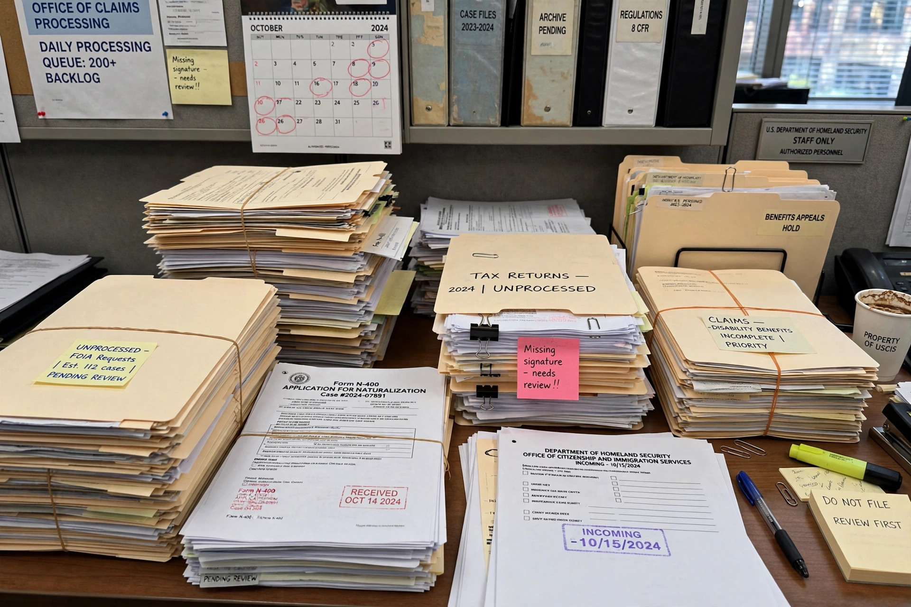

Maladministration is the actions of a government body which can be seen as causing injustice through error, neglect, delay, incompetence, or failure to follow proper procedures or the law. It is a key concept in administrative law and in the work of ombudsmen, who typically investigate complaints of maladministration rather than the merits of a decision itself.

Stacks of unprocessed paperwork and files in a government office.
The term was famously described in the British Parliament by Richard Crossman in 1966, in debate on the Parliamentary Commissioner Act, as covering "bias, neglect, inattention, delay, incompetence, ineptitude, perversity, turpitude, arbitrariness and so on". Maladministration does not usually include a decision that is merely unpopular or wrong on its merits; it concerns the way a decision was made or implemented — for example, failing to follow published policy, losing records, giving wrong advice, taking unreasonable time, or failing to tell a person of a right of appeal.
Complaints of maladministration are usually made first to the public body concerned and then to an ombudsman, such as the European Ombudsman for EU institutions or the Parliamentary and Health Service Ombudsman in the United Kingdom. Remedies may include an apology, an explanation, reconsideration of the decision, and financial redress for loss or distress. In some legal systems, serious maladministration may also ground judicial review or a claim of misfeasance in public office.
Ombudsman annual reports and administrative law textbooks.